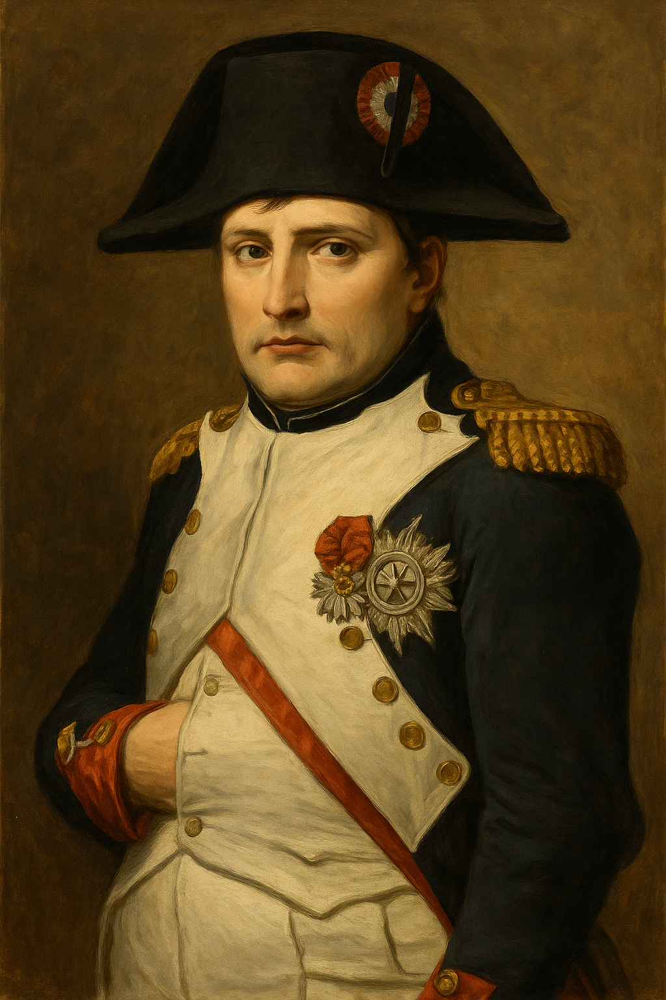

The Dream of Worldwide Democratic and Social Republics – The Pact Between Nations
- In 1848, Frédéric Sorrieu, a French artist, prepared a series of four prints visualising his dream of a world made up of ‘democratic and social Republics’.
- The first print shows the peoples of Europe and America – men and women of all ages and social classes – marching in a long train, and offering homage to the Statue of Liberty.
- Liberty is personified as a female figure – holding the torch of Enlightenment in one hand and the Charter of the Rights of Man in the other.
- On the ground lie the shattered remains of the symbols of absolutist institutions.
- Peoples of the world are grouped as distinct nations, identified through their flags and national costume.
- United States and Switzerland lead the procession, followed by France with the revolutionary tricolour.
- Germany follows, bearing the black, red and gold flag, symbolising liberal hopes of unification under a democratic constitution.
- They are followed by Austria, the Kingdom of the Two Sicilies, Lombardy, Poland, England, Ireland, Hungary and Russia.
- From the heavens above, Christ, saints and angels gaze upon the scene, symbolising fraternity among the nations of the world.
The French Revolution and the Idea of Nation[Important]
French Revolutionaries introduced the following practices to create a sense of collective identity amongst
the French citizens:-
- New tricolour flag replaced the old royal flag used by French monarchy.
- Establishment of a centralised administrative system with uniform laws for all citizens.
- New hymns were composed and oaths were taken.
- Martyrs(Saheed) were remembered in the name of the nation.(saheedon ko samaneet kya gaya)
- Estate general elected by the body of citizens was renamed to National Assembly.
- Uniform system of weights and measurements were adopted.
- Ideas of la patrie and le citoyen of a united community with equal rights under a constitution was
promoted.
Napoleonic Code[Important]

Key points to remember
In 1804, Napoleon introduced Napoleonic code(Also known as Civil Code of 1804).
Features of Napoleonic Code
- It removed all privileges by birth.
- Established equality before law.
- Secured the Right to Property.
- Simplified administrative systems in Dutch republic, Switzerland, Italy and Germany.
- Abolished the Feudal System.
- Abolished guild restrictions in the town areas.
- Freed peasants from serfdom and manorial dues.
- Transport and Communication systems were improved.
- Established uniform laws, standardized weights and measures and common national currency which
facilitated the movement of goods from one place to another.
Negative Effects of Napoleonic Code
- High taxation on peasants.
- Forced recruitment of people in the army.
- Limited political freedom.
- Increased censorship.
The ideology of Liberalism(Latin Word: Liber, Meaning: Free)
Political aspects
- Demanded a government elected by the people.
- All adult citizens who are able to pay taxes should have the right to vote (They were against the voting
rights for women and poor men).
- Were against the monarchy rule and ending all clerical privileges.
- They supported the parliamentary form of governance.
Economic aspects
- Freedom of markets
- Abolition of state imposed restrictions on the movement of goods.
- Demanded for a uniform weights and measurement systems.
In 1834, a Customs Union or Zollverein was formed which abolished tariff barriers and reduced
the numbers of currencies from over thirty to two.
Treaty of Vienna [Important]
Conservative Order and Censorship
- A new conservative order was established.
- Autocratic regimes suppressed criticism and dissent.
- Strict censorship laws imposed on newspapers, books, plays, and songs.
- Despite repression, French Revolution ideals continued to inspire liberals.
- Freedom of the press became a major demand of liberal-nationalists.
The Aristocracy and the new middle class
- The aristocracy was a dominant class in Europe.
- Owned estates and townhouses.
- They spoke French.
- They were connected by marriage.
- However, they were a small group.
- The majority of the population consisted of peasantry.
- Industrialization led to:
- Growth of towns and commercial classes.
- Emergence of a working-class population.
- Rise of middle classes, including industrialists, businessmen, and professionals.
- In Central and Eastern Europe, these groups remained smaller until the late 19th century.
The Age of Revolutions
July Revolution (France, 1830)
- Bourbon monarchy overthrown by liberal revolutionaries.
- Louis Philippe installed as constitutional monarch.
- Impact: Inspired uprising in Brussels, leading to Belgium’s independence from the
Netherlands.
Metternich’s quote: "When France sneezes, Europe catches cold."
Greek Struggle for Independence
- Ottoman Empire captured Greece in the mid-fourteenth century.
- In 1821, Greeks fought for their independence. Many people supported their cause.
- Lord Byron (English poet) funded and fought in the war; died in 1824.
- In 1832, with the Treaty of Constantinople Greece attained its independence and became a country.
Romanticism [Important]
The Massacre at Chios, Eugene Delacroix, 1824
- Romanticism is a cultural movement which sought to develop a particular form of nationalist sentiment.
- Romantic artists and poets generally criticised the glorification of reason and science and focused
instead on emotions, intuition and mystical feelings.
- Their effort was to create a sense of a shared collective heritage, a common cultural past, as the basis
of a nation.
- The German philosopher Johann Gottfried Herder claimed that true German culture was to be discovered
among the common people – das volk.
- It was through folk songs, folk poetry and folk dances that the true spirit of the nation (volksgeist)
was popularised.
CASE OF POLAND
Partition of Poland: In the 18th century, Russia, Prussia, and Austria divided Poland, ending its
independence.
Role of Music:
- Karol Kurpinski promoted nationalism through operas and music.
- Folk dances like polonaise and mazurka became nationalist symbols.
Impact of Russian Occupation:
- Polish language banned in schools, Russian imposed everywhere.
- 1831 Rebellion against Russian rule was crushed.
Role of the Church:
- Clergy resisted by using Polish in Church gatherings and religious instruction.
- Russian authorities punished priests and bishops by jailing or exiling them to Siberia.
Language as Resistance:
- Using Polish became a symbol of struggle against Russian dominance.
Economic Hardship in 1830s Europe
- Sharp population growth led to job scarcity.
- Rural to urban migration caused overcrowded slums.
- Small producers faced competition from cheap English machine-made goods.
- Textile production was partly mechanised and home-based.
- Peasants suffered under feudal dues in aristocratic regions.
- Food price rise or bad harvests caused mass poverty.
Liberal Revolutions of 1848 [ Frankfurt Parliament]
Frankfurt Parliament was the first freely elected all-German national assembly, formed in May 1848
during the liberal revolutions across Europe.
Where: Convened in the Church of St. Paul, Frankfurt.
Who: Composed of 831 elected representatives, mainly from the middle class – professionals,
businessmen, and artisans.
Aim: To draft a constitution for a unified German nation based on liberal and
constitutional principles.
Key Proposals:
- A constitutional monarchy
- A parliamentary system
- Fundamental rights, including freedom of press and association
However:
- The crown was offered to King Friedrich Wilhelm IV of Prussia, who rejected it, unwilling to accept a
crown from the people.
- The parliament lacked support from workers and faced opposition from monarchy and military.
- It eventually failed and was disbanded by force.
Revolutions of 1848[Events in France]
- Paris uprising due to food shortage & unemployment.
- Louis Philippe fled; barricades were erected.
- Republic proclaimed by National Assembly.
- Suffrage to all adult males (21+)
- Right to work guaranteed
- National workshops set up for employment
Aftermath of 1848 Revolutions
- Though liberal revolutions were suppressed, monarchs couldn’t fully restore the old order.
- Rulers began to realise the need for liberal reforms to avoid repeated unrest.
Concessions granted:
- Serfdom and bonded labour abolished in the Habsburg Empire and Russia.
- In 1867, Hungarians were granted autonomy within the Habsburg Empire.
The ideas of liberalism and nationalism continued to influence future movements across Europe.
A short note Giuseppe Mazzini [Important]
- Born in Genoa, 1807.
- Former member of a secret society Carbonari.
- He was sent to exile after attempting a failed revolution in Liguria.
- Founded two secret societies
- Young Italy -Marseilles
- Young Europe - Berne
- He believed the nations were intended by God to be natural units of humanity.
- Duke Metternich, Former Chancellor of Austria described him as "the most dangerous enemy of the social
order."
Unification of Germany[Important]
- Germany was divided into 39 confederations by Napoleon Bonaparte.
- In 1834, a Customs Union or Zollverein was formed which abolished tariff barriers and reduced the
numbers of currencies from over thirty to two. This unified the German estates Economically.
- Later, in 1848, the middle class tried to unite the different regions in the German confederation into a
nation state governed by an elected parliament headed by the king.
- These efforts faced strong opposition from the monarchy, military and landowners(Junkers) in Prussia.
- Friderich Wilhelm IV of Prussia used the military and forcefully disbanded the assembly.
- After this failed attempt Otto Von Bismarck the chief minister of Prussia used the military and
bureaucracy with an aim to achieve German Unification.
- Three battles were fought over seven years with Austria, France and Denmark where Prussia emerged
victorious.
- In January 1871, Kaiser William I, the King of Prussia, was declared the Emperor of Unified Germany in a
ceremony held at the Palace of Versailles.
Unification of Italy
Background
- Italy was divided into seven states in the 19th century.
- North: Controlled by Austrian Habsburgs
- Centre: Under Pope’s rule
- South: Dominated by Spanish Bourbon kings
- Only Sardinia-Piedmont was ruled by an Italian princely house.
- Italian language had regional variations, not yet unified.
Early Efforts
- 1830s: Giuseppe Mazzini launched a programme for a unified Italian Republic.
- Founded the secret society Young Italy.
- Revolts in 1831 & 1848 failed, so leadership passed to Sardinia-Piedmont under King Victor Emmanuel II.
Role of Cavour
- Chief Minister Cavour was a strategist, not a revolutionary.
- Engineered a diplomatic alliance with France.
- 1859: Sardinia-Piedmont defeated Austria with French help.
Role of Garibaldi
- 1860: Garibaldi led volunteers to liberate South Italy and the Kingdom of Two Sicilies.
- Gained support of local peasants, expelled Spanish rulers.
Timeline of Events
Strange case of Britain
Background
- Pre-18th century: No unified British nation. People identified as English, Welsh,
Scots, or Irish, with separate cultural and political traditions.
- The idea of a British nation-state developed gradually over time, not through a single revolution or
upheaval.
Role of England
- As England grew in wealth and power, it extended influence over the other nations of the British Isles.
- English Parliament played a crucial role after 1688, when it seized power from the monarchy and began
forming the British nation-state with England at the center.
Key Acts and Events
- 1707: Act of Union created the United Kingdom of Great Britain, uniting England and Scotland.
- England dominated the British Parliament, and Scottish culture and political institutions were
suppressed.
- Scottish Gaelic language and traditional dress were banned, and Highland clans faced repression.
Capturing Ireland
- Ireland was divided between Catholics and Protestants, with Protestants supported by England.
- After the 1798 revolt led by Wolfe Tone's United Irishmen, Ireland was forcibly incorporated into the
United Kingdom in 1801.
- A British identity was propagated through English culture, including the Union Jack, God Save the King,
and the English language.
- Scotland and Ireland became subordinate partners within the British Union, with their cultures
marginalized.
Visualising the Nation
Personification of Nations in Art
- In the 18th and 19th centuries, artists personified nations by representing them as female figures to
give an abstract concept a concrete form.
- Female allegories were used to represent the nation rather than a specific woman, becoming symbolic
representations of the country.
- During the French Revolution, female allegories like Liberty, Justice, and the Republic were depicted
using specific symbols:
- Liberty: Red cap, broken chains
- Justice: Blindfolded woman with weighing scales
- Marianne personified France.
- She symbolized a people's nation with characteristics like the red cap, tricolour, and cockade.
- Statues of Marianne were placed in public squares, and her image appeared on coins and stamps.
- Germania became the allegory of the German nation, often depicted wearing a crown of oak leaves,
symbolizing heroism.
| Attribute |
Significance |
| Broken chains |
Being freed |
| Breastplate with eagle |
Symbol of the German empire - strength |
| Crown of oak leaves |
Heroism |
| Sword |
Readiness to fight |
| Olive branch around the sword |
Willingness to make peace |
| Black, red and gold tricolour |
Flag of the liberal-nationalists in 1848, banned by the Dukes of the
German states |
| Rays of the rising sun |
Beginning of a new era |
Nationalism and Imperialism
I. Nationalism in the Late 19th Century and the Balkans
- Nationalism turned from liberal-democratic ideals to narrow, aggressive ambitions.
- Nationalist groups became intolerant, often leading to conflict and war.
- Major powers exploited nationalism for imperialist goals.
- The Balkans became the most serious source of nationalist tension in Europe after 1871.
- Region comprised modern-day Romania, Bulgaria, Albania, Greece, Macedonia, Croatia, Bosnia-Herzegovina,
Slovenia, Serbia and Montenegro.
- Inhabitants broadly known as Slavs, most of the region was under the Ottoman Empire.
- Romantic nationalism and the disintegration of the Ottoman Empire made the Balkans very explosive.
- Balkan nationalities used history to prove their past independence and viewed struggles as efforts to
win back long-lost independence.
- Balkan states were fiercely jealous of each other, hoping to gain more territory.
- Rivalries among Balkan states and interference from European powers (Russia, Germany, England,
Austro-Hungary) escalated tensions.
- This rivalry and territorial ambitions led to frequent wars and ultimately led to World War I.
II. Nationalism and Anti-Imperial Movements Worldwide
- Nationalism, aligned with imperialism, led Europe to disaster in 1914.
- In the meantime, many countries colonised by European powers in the 19th century began to oppose
imperial domination.
- These anti-imperial movements were nationalist, aiming to form independent nation-states.
- They were driven by a sense of collective national unity, forged in confrontation with imperialism.
- Though inspired by Europe, European ideas of nationalism were nowhere replicated.
- Societies developed their own specific variety of nationalism.
- The concept that societies should be organised into ‘nation-states’ became seen as natural and
universal.